🎯 पहले ये समझ लीजिए — पूरी SMC एक लाइन में:
“बाज़ार वहाँ जाता है जहाँ लोगों के स्टॉप लॉस पड़े हैं।
बड़े लोग पहले वो स्टॉप कटवाते हैं, सस्ते में माल उठाते हैं,
फिर भाव को अपनी दिशा में ले जाते हैं।”
बाकी सारा कोर्स इसी एक लाइन को खोलकर समझाता है।
स्तर १
बुनियाद
ये न आया तो आगे कुछ नहीं समझेगा
१
कैंडल पढ़ना सीखिए
चार्ट की सबसे छोटी ईंट
चार्ट पर जो छोटी-छोटी डंडियाँ दिखती हैं — उन्हें कैंडल कहते हैं।
हर कैंडल एक समय का पूरा हाल बताती है। जैसे अगर आपने “1 घंटा” चुना है, तो हर कैंडल एक घंटे की कहानी है।
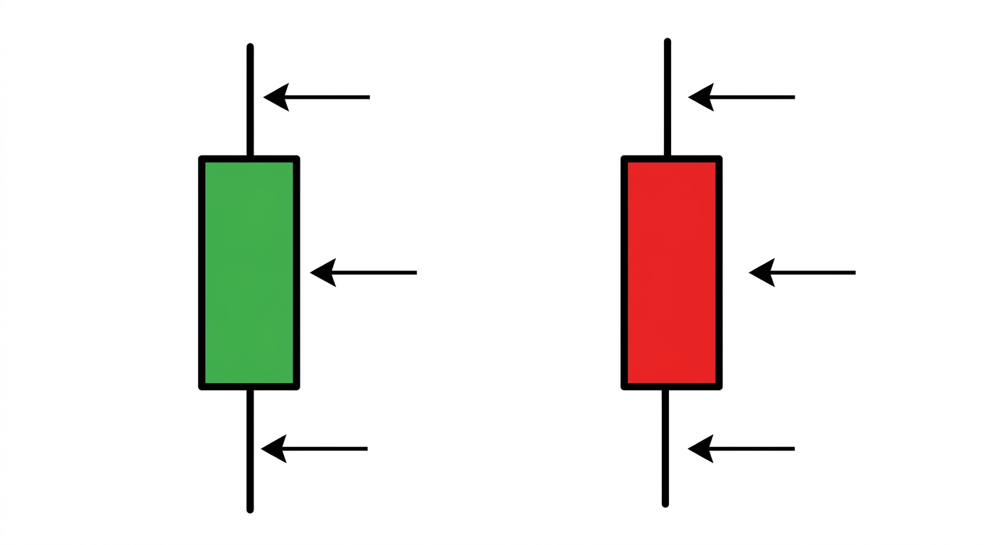
▲ बाईं तरफ़ हरी कैंडल · दाईं तरफ़ लाल कैंडल · तीर तीन हिस्सों की ओर इशारा कर रहे हैं
हर कैंडल के तीन हिस्से होते हैं:
| हिस्सा | क्या बताता है |
|---|
| ऊपर की पतली लकीर | भाव सबसे ऊँचा कहाँ तक गया |
| बीच का मोटा हिस्सा | कहाँ खुला और कहाँ बंद हुआ |
| नीचे की पतली लकीर | भाव सबसे नीचे कहाँ तक गया |
रंग का मतलब:
- 🟩 हरी — भाव ऊपर बंद हुआ। खरीदने वाले जीते।
- 🟥 लाल — भाव नीचे बंद हुआ। बेचने वाले जीते।
🔑 अब सबसे ज़रूरी बात — बाती (wick)
वो पतली लकीर कहती है: “भाव यहाँ तक गया था… पर टिक नहीं पाया, किसी ने वापस धकेल दिया।”
लंबी बाती = वहाँ कोई ताक़तवर बैठा है।
पूरा SMC इसी एक बात पर टिका है। इसे मत भूलिएगा।
🥊 ऐसे समझिए — कैंडल एक कुश्ती का दंगल है।
मोटा हिस्सा = कौन जीता।
बाती = कौन कहाँ तक धकेल पाया था, पर फिर पीछे हट गया।
२
सपोर्ट और रेजिस्टेंस
वो जगहें जहाँ भाव रुकता है
चार्ट देखेंगे तो पाएँगे कि भाव कुछ ख़ास जगहों पर बार-बार रुकता है। ये संयोग नहीं है।
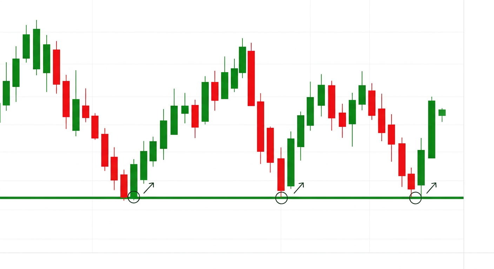
▲ हरी लकीर पर भाव तीन बार आया और तीनों बार वापस ऊपर चला गया
तस्वीर में देखिए — भाव तीन बार उसी लकीर तक गिरा, और तीनों बार वापस ऊपर आ गया।
| नाम | कहाँ | क्या होता है |
|---|
| सपोर्ट 🟢 | भाव के नीचे | भाव गिरकर रुक जाता है — फ़र्श |
| रेजिस्टेंस 🔴 | भाव के ऊपर | भाव चढ़कर रुक जाता है — छत |
🏠 घर की तरह सोचिए — गेंद उछालेंगे तो छत से टकराकर वापस आएगी।
गिराएँगे तो फ़र्श से टकराकर उछलेगी।
⚡ पर ध्यान दीजिए — यहीं से SMC शुरू होता है!
जब भाव तीसरी बार सपोर्ट पर आता है, तो पूरी दुनिया वहाँ खरीदने खड़ी होती है।
और जब सब एक ही जगह खड़े हों… तो वहाँ शिकार होना तय है। 🎯
पाठ 5 और 7 में यही समझेंगे।
३
चाल पहचानना (ट्रेंड)
बाज़ार तीन में से एक हाल में रहता है
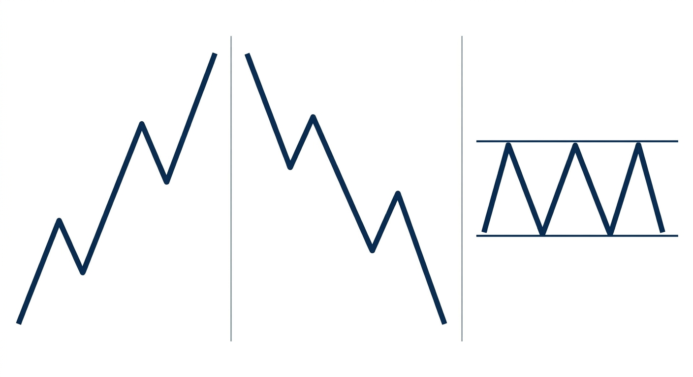
▲ बाएँ: ऊपर की चाल · बीच: नीचे की चाल · दाएँ: सपाट (एक जगह घूमना)
1️⃣ ऊपर की चाल (बाईं तस्वीर)
सीढ़ी की तरह ऊपर चढ़ रहा है। हर ऊँचाई पिछली से ऊँची, हर गहराई पिछली से ऊँची।
2️⃣ नीचे की चाल (बीच वाली)
उल्टी सीढ़ी। हर ऊँचाई पिछली से नीची, हर गहराई पिछली से नीची।
3️⃣ सपाट (दाईं तस्वीर)
दो लकीरों के बीच बार-बार टकरा रहा है। कहीं नहीं जा रहा।
🔑 सुनहरा नियम:
ऊपर की चाल में → सिर्फ़ खरीदने की सोचिए
नीचे की चाल में → सिर्फ़ बेचने की सोचिए
सपाट में → कुछ मत कीजिए, इंतज़ार
चाल के ख़िलाफ़ लड़ना = पानी में उल्टा तैरना।
❌ नए लोगों की सबसे बड़ी गलती
भाव नीचे गिर रहा है, और वो सोचते हैं — “अरे इतना सस्ता हो गया, अब तो खरीद ही लूँ!”
और भाव और नीचे चला जाता है। सस्ता, और सस्ता हो सकता है।
४
स्टॉप लॉस क्या है
बिना इसके SMC समझ ही नहीं आएगा
मान लीजिए आपने कोई शेयर 100 रुपए में खरीदा।
अब आप डरते हैं कि कहीं ये गिर न जाए। तो आप ब्रोकर को कहते हैं —
“अगर भाव 98 पर आ जाए, तो मेरा शेयर अपने आप बेच देना। मैं इससे ज़्यादा नुकसान नहीं झेल सकता।”
यही स्टॉप लॉस है। ये आपका सुरक्षा कवच है — और हर अच्छे ट्रेडर के लिए ज़रूरी है।
🔑 अब वो बात जो पूरा खेल पलट देती है:
आपका “स्टॉप लॉस” असल में एक बेचने का ऑर्डर है।
अगर हज़ार लोगों ने 98 पर स्टॉप लगाया है —
तो 98 पर हज़ार बेचने के ऑर्डर पड़े हैं!
और किसी बड़े आदमी को अगर बहुत सारा माल खरीदना है…
तो उसे ऐसे ही लोग चाहिए जो एक साथ बेचें। 🍯
✅ यही पूरे SMC का बीज है।
अगला पाठ इसी को खोलेगा। अगर ये समझ आ गया — आधा कोर्स हो गया।
स्तर २
SMC की असली सोच
अब असली खेल शुरू होता है
५
लिक्विडिटी — पैसा कहाँ पड़ा है
SMC की सबसे बुनियादी बात
लिक्विडिटी का सीधा मतलब — “वो जगह जहाँ बहुत सारे ऑर्डर जमा हैं।”
और वो जगह कहाँ बनती है? — जहाँ भीड़ एक जैसा सोचती है।
📖 पूरी कहानी:
भाव 100 पर दो बार रुका। अब चार्ट देखने वाला हर आदमी सोच रहा है —
“100 सपोर्ट है। यहाँ खरीदूँगा, स्टॉप 98 पर।”
नतीजा — हज़ारों स्टॉप 98 के आसपास जमा हो गए।
यानी 98 पर हज़ारों बेचने के ऑर्डर पड़े हैं। 🍯
अब बड़े आदमी की सोच देखिए:
- उसे 10 लाख शेयर खरीदने हैं
- अगर सीधे खरीदे तो भाव भागकर 110 हो जाएगा — बहुत महँगा
- उसे चाहिए — बहुत सारे लोग जो एक साथ बेचें
- और वो कहाँ हैं? 👉 98 पर, स्टॉप लॉस बनकर बैठे हैं
- तो वो भाव को 98 तक ले जाएगा — और वहाँ अपना माल उठा लेगा 🎯
🔑 पूरा SMC इस एक लाइन में है:
भाव वहाँ नहीं जाता जहाँ लोग सोचते हैं।
भाव वहाँ जाता है जहाँ पैसा पड़ा है।
६
बराबर ऊँचाई और गहराई
लिक्विडिटी कहाँ ढूँढें — ये सीखिए
अब सवाल — चार्ट पर लिक्विडिटी कहाँ दिखती है?
जवाब — जहाँ भाव दो-तीन बार एक ही जगह रुका हो।
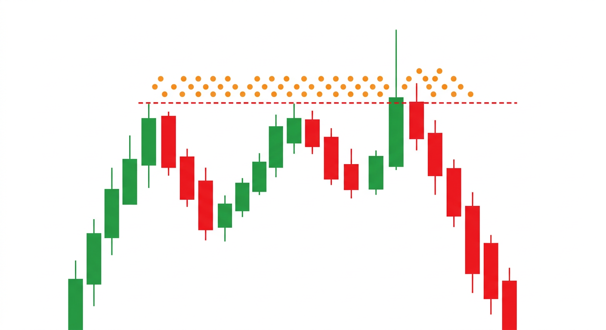
▲ लाल टूटी लकीर = बराबर ऊँचाई · नारंगी बिंदु = वहाँ जमा हुए ऑर्डर · फिर एक कैंडल ने ऊपर बाती मारी और भाव धड़ाम
इस तस्वीर को ध्यान से देखिए — भाव दो बार एक ही ऊँचाई पर जाकर रुका। लाल लकीर वही दिखा रही है।
ऊपर जो नारंगी बिंदु हैं — वो बताते हैं कि वहाँ ढेर सारे ऑर्डर जमा हैं।
वो ऑर्डर किसके हैं?
- जिन्होंने बेचा था, उनके स्टॉप लॉस (ऊपर लगे होते हैं)
- जो सोच रहे हैं — “अगर ये लकीर टूटी तो मैं खरीदूँगा”
अब देखिए क्या हुआ — एक बड़ी हरी कैंडल ने लकीर के ऊपर लंबी बाती मारी… सारे ऑर्डर उठा लिए… और उसके बाद भाव सीधा नीचे 📉
🔑 याद रखिए:
बराबर ऊँचाई = ऊपर पैसा पड़ा है → भाव उसे लेने ऊपर जाएगा
बराबर गहराई = नीचे पैसा पड़ा है → भाव उसे लेने नीचे जाएगा
🎯 ये पहली असली काम की बात है!
अगली बार चार्ट पर दो बराबर ऊँचाई दिखें — तो समझ जाइए कि भाव वहाँ जाने की कोशिश करेगा।
७
झाड़ू — Liquidity Sweep 🧹
⭐ पूरे कोर्स का सबसे ज़रूरी पाठ
अगर आप इस पूरे कोर्स से सिर्फ़ एक चीज़ ले जा सकें — तो यही ले जाइए।
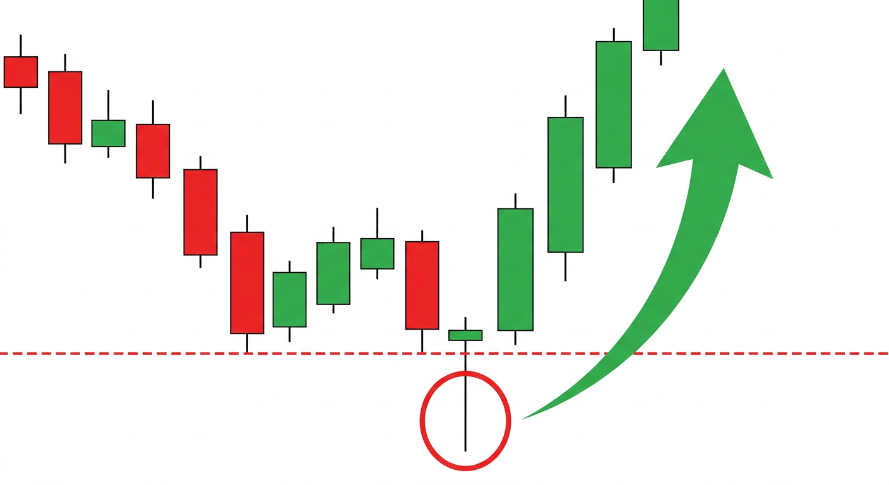
▲ लाल लकीर = सपोर्ट · लाल घेरा = लंबी बाती (यहाँ सबके स्टॉप कटे) · हरा तीर = तुरंत ज़ोरदार वापसी
कदम दर कदम — क्या हुआ:
- भाव गिरता हुआ आया और लाल लकीर पर रुका (सपोर्ट)
- भीड़ ने वहाँ खरीदा, और स्टॉप लॉस ठीक नीचे लगाया
- 🧹 फिर एक कैंडल आई — जिसने लकीर के नीचे लंबी बाती मारी। सबके स्टॉप कट गए
- वो सारा बिका हुआ माल बड़े आदमी ने सस्ते में उठा लिया
- अब बेचने वाला कोई नहीं बचा → भाव सरपट ऊपर 🚀
😤 और आम आदमी स्क्रीन देखकर चिल्लाता है —
“अरे यार! मेरा स्टॉप लगते ही भाव ऊपर चला गया!
ये लोग मेरा ही स्टॉप देखते हैं क्या?!”
हाँ भाई — कुछ हद तक देखते ही हैं। पर आपका नाम देखकर नहीं —
वो सिर्फ़ ये देखते हैं कि ऑर्डर कहाँ जमा हैं।
🔑 पहचान का पक्का नियम:
लंबी बाती + तुरंत वापसी = झाड़ू लग गई
नीचे लंबी बाती → अब ऊपर जा सकता है 🟢
ऊपर लंबी बाती → अब नीचे जा सकता है 🔴
⚠️
पर सावधान — हर लंबी बाती झाड़ू नहीं होती!
असली झाड़ू के तीन लक्षण:
- बाती किसी अहम लकीर के नीचे/ऊपर गई हो (ऐसे ही कहीं नहीं)
- वापसी तेज़ हुई हो — 1-2 कैंडल में
- कैंडल वापस लकीर के अंदर बंद हुई हो
तीनों हों —
तभी झाड़ू मानिए।
८
ढाँचा — BOS और CHoCH
झाड़ू के बाद पक्का करने का तरीका
झाड़ू लग गई — ठीक है। पर पक्का कैसे करें कि अब सच में चाल पलट गई?
इसके लिए ढाँचा देखते हैं।
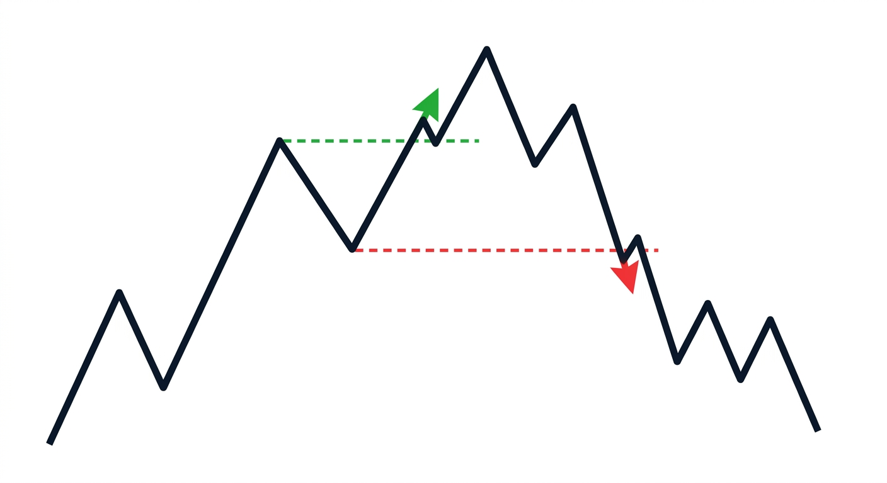
▲ हरा तीर = BOS (तेज़ी जारी) · लाल तीर = CHoCH (खेल पलट रहा है)
🟢 BOS (हरा तीर) — “जो चल रहा था, वही चल रहा है”
बाईं तरफ़ देखिए — भाव सीढ़ी की तरह ऊपर चढ़ रहा है। फिर उसने पिछली ऊँचाई तोड़ दी।
मतलब — तेज़ी अभी ज़िंदा है, चलती रहेगी।
🔴 CHoCH (लाल तीर) — “सावधान, कुछ बदल रहा है”
दाईं तरफ़ देखिए — भाव ऊपर चढ़ते-चढ़ते थक गया, और फिर पहली बार पिछली गहराई तोड़ दी।
मतलब — अब चाल पलट सकती है।
| नाम | क्या हुआ | मतलब |
|---|
| BOS 🟢 | चाल की दिशा में ढाँचा टूटा | जारी रहेगा |
| CHoCH 🔴 | उल्टी दिशा में ढाँचा टूटा | पलट सकता है |
🔑 दोनों को जोड़िए — यही SMC का दिल है:
झाड़ू 🧹 + CHoCH 🔄 = सबसे ताक़तवर संकेत
झाड़ू कहती है — “बड़े लोग घुस गए”
CHoCH कहता है — “और अब दिशा सच में बदल गई”
अकेली झाड़ू पर मत घुसिए। CHoCH का इंतज़ार कीजिए।
स्तर ३
औज़ार
अब सीखेंगे — घुसें कहाँ से
९
ऑर्डर ब्लॉक — बड़े का घर 🏠
वो जगह जहाँ से धमाका हुआ था
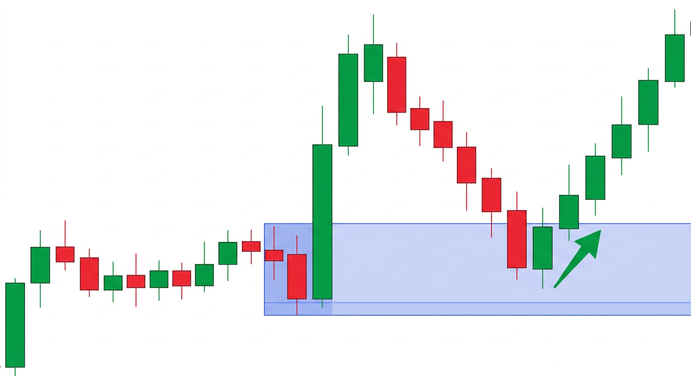
▲ नीला डिब्बा = ऑर्डर ब्लॉक · भाव वापस आया और फिर उछल गया
तस्वीर देखिए — पहले भाव सीधा-सपाट चल रहा था। फिर अचानक एक बहुत बड़ी हरी कैंडल ने छलाँग लगा दी 🚀
सवाल — वो छलाँग अचानक क्यों आई?
SMC कहता है — उस छलाँग से ठीक पहले वाली आख़िरी लाल कैंडल पर
बड़े आदमी ने चुपचाप माल उठाया था।
वही जगह नीले डिब्बे से दिखाई गई है। यही ऑर्डर ब्लॉक है।
अब उम्मीद क्या है? — भाव ऊपर जाकर वापस उसी डिब्बे में आया… और फिर से ऊपर उछल गया ✅
ढूँढने का तरीका:
- चार्ट पर कोई बहुत बड़ी कैंडल ढूँढिए जिसने अचानक छलाँग लगाई हो
- उसके ठीक पहले वाली उल्टे रंग की कैंडल देखिए
(ऊपर की छलाँग → पहले वाली लाल · नीचे की छलाँग → पहले वाली हरी)
- उस कैंडल के ऊपर-नीचे एक डिब्बा खींच दीजिए
- अब इंतज़ार कीजिए कि भाव वापस उस डिब्बे में आए
⚠️ ईमानदारी की बात — ऑर्डर ब्लॉक असल में सपोर्ट/रेजिस्टेंस ही है, बस नया नाम है।
और पुराने चार्ट पर आपको 10 ऑर्डर ब्लॉक दिख जाएँगे। सब सही लगेंगे।
लाइव में पता नहीं चलता कौन सा चलेगा।
इसलिए — अकेले ऑर्डर ब्लॉक पर मत घुसिए। झाड़ू के साथ मिलाइए।
१०
खाली जगह — FVG 🕳️
जो सीढ़ी छूट गई, उसे छूना पड़ता है
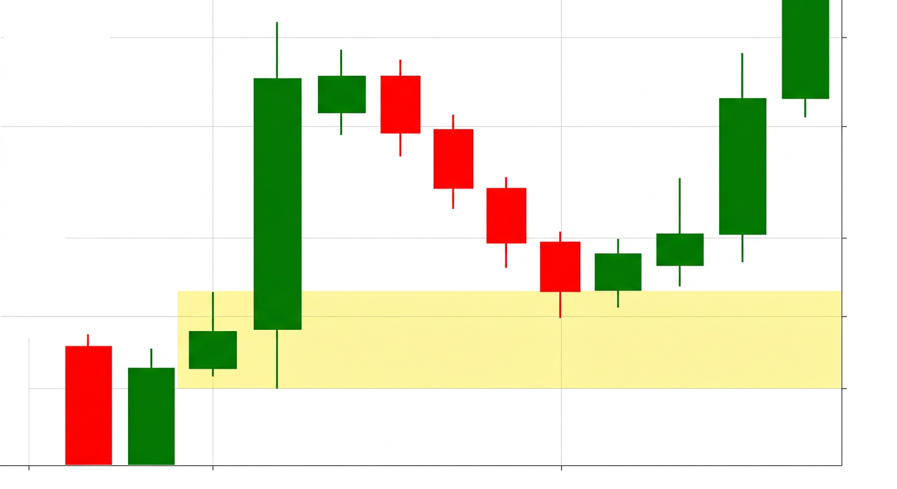
▲ पीला हिस्सा = खाली जगह · भाव वापस आया, छुआ, और फिर ऊपर भागा
देखिए — बीच में एक बहुत बड़ी हरी कैंडल है। भाव इतनी तेज़ी से भागा कि बीच के हिस्से में कोई सौदा ही नहीं हुआ।
वही खाली हिस्सा पीले रंग से दिखाया गया है।
🪜 याद रखने का तरीका:
सीढ़ी चढ़ते वक़्त आपने जल्दबाज़ी में एक सीढ़ी छोड़ दी —
बाद में उतरकर उसे छूना ही पड़ता है।
बाज़ार को भी “अधूरा काम” पसंद नहीं है।
पहचानने का तरीका (तीन कैंडल का नियम):
- तीन लगातार कैंडल देखिए, जिनमें बीच वाली बहुत बड़ी हो
- पहली कैंडल की ऊपरी बाती कहाँ ख़त्म हुई — देखिए
- तीसरी कैंडल की निचली बाती कहाँ शुरू हुई — देखिए
- अगर बीच में खाली जगह बची है → वही FVG है
✅ कैसे इस्तेमाल करें
FVG को घुसने की जगह मानिए। भाव जब वापस आकर उसे छुए —
तब वहाँ से चाल की दिशा में सौदा करने की सोचिए।
और सबसे बढ़िया तब — जब FVG और ऑर्डर ब्लॉक एक ही जगह हों। 🎯
११
महँगा और सस्ता इलाक़ा ⚖️
कहाँ खरीदें, कहाँ न खरीदें
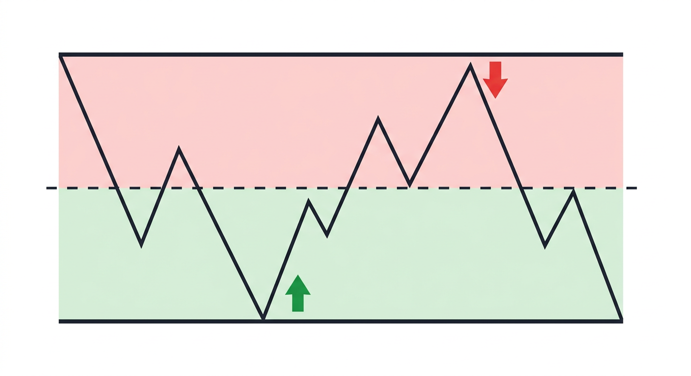
▲ ऊपरी लाल हिस्सा = महँगा · निचला हरा हिस्सा = सस्ता · बीच की टूटी लकीर = आधा
बहुत आसान बात है। किसी भी ऊपर-नीचे की सीमा को बीच से आधा कर दीजिए।
| भाव कहाँ है | क्या कहलाता है | क्या करें |
|---|
| ऊपरी आधे में | महँगा 🔴 | खरीदना नहीं · बेचना ठीक |
| निचले आधे में | सस्ता 🟢 | खरीदना ठीक · बेचना नहीं |
| ठीक बीच में | बराबर ⚪ | कुछ मत कीजिए |
🛒 दुकान की तरह सोचिए
कपड़े कब लेते हैं? — सेल में (सस्ता इलाक़ा) ✅
कब नहीं लेते? — त्योहार पर, पूरे दाम में (महँगा इलाक़ा) ❌
बाज़ार में भी यही बात है। पर लोग उल्टा करते हैं —
जब भाव सबसे ऊपर होता है, तभी सबसे ज़्यादा उत्साह होता है।
🔑 सबसे ताक़तवर जोड़:
सस्ता इलाक़ा + झाड़ू + ऑर्डर ब्लॉक = 🎯 सबसे बढ़िया मौका
तीनों एक जगह मिल जाएँ — तो वहाँ सौदे की ताक़त सबसे ज़्यादा होती है।
१२
बड़ा चार्ट, छोटा चार्ट
ये न समझा तो सब गड़बड़ हो जाएगा
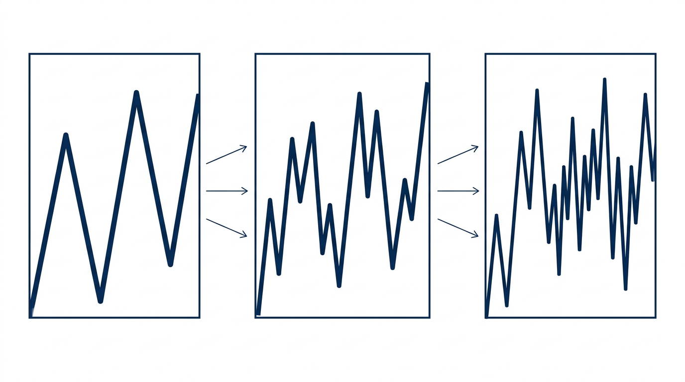
▲ वही बाज़ार, तीन अलग नज़रों से — बाएँ बड़ा चार्ट, दाएँ छोटा चार्ट
एक ही बाज़ार को आप अलग-अलग समय से देख सकते हैं — 1 मिनट, 15 मिनट, 1 घंटा, 1 दिन।
तस्वीर देखिए — वही चाल है, बस पास से देखने पर ज़्यादा उतार-चढ़ाव दिखते हैं।
🗺️ नक्शे की तरह सोचिए
बड़ा चार्ट = पूरे शहर का नक्शा — बताता है किधर जाना है
छोटा चार्ट = गली का नक्शा — बताता है कहाँ मुड़ना है
सिर्फ़ गली का नक्शा देखेंगे तो भटक जाएँगे। 🧭
सही तरीका — तीन कदम:
- बड़ा चार्ट (1 दिन) → दिशा तय कीजिए — ऊपर या नीचे?
- बीच का चार्ट (1 घंटा) → जगह ढूँढिए — ऑर्डर ब्लॉक, FVG कहाँ है?
- छोटा चार्ट (15 मिनट) → घुसने का समय — झाड़ू और CHoCH यहाँ देखिए
❌ नए लोगों की सबसे आम गलती
सिर्फ़ 1-5 मिनट का चार्ट देखना।
वहाँ इतना शोर होता है कि हर जगह झाड़ू और ऑर्डर ब्लॉक दिखेगा।
फिर दिन में 15 ट्रेड होंगे, और कमीशन में सारा पैसा चला जाएगा।
शुरुआत में सिर्फ़ 1 घंटा और 1 दिन का चार्ट देखिए।
स्तर ४
असली ट्रेडिंग
अब सब कुछ जोड़ते हैं
१३
पूरा सौदा — शुरू से आख़िर तक
सारे पाठ एक जगह
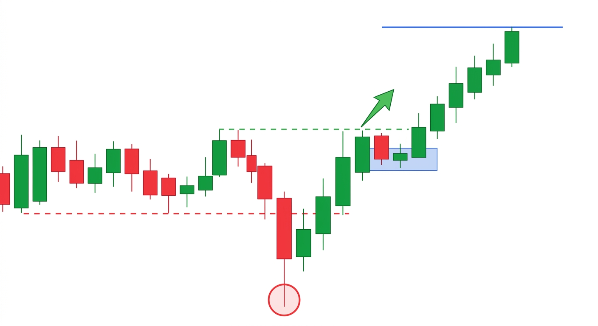
▲ लाल लकीर = सपोर्ट · लाल घेरा = झाड़ू · हरी लकीर+तीर = BOS · नीला डिब्बा = ऑर्डर ब्लॉक · ऊपर नीली लकीर = लक्ष्य
इस एक तस्वीर में पूरा कोर्स है। कदम दर कदम पढ़िए:
- भाव सपाट चल रहा था — नीचे बराबर गहराई बनी (लाल टूटी लकीर)। यानी वहाँ पैसा जमा है 🍯
- 🧹 झाड़ू लगी — एक बड़ी लाल कैंडल ने लकीर के नीचे लंबी बाती मारी (लाल घेरा)। सबके स्टॉप कट गए
- तुरंत वापसी — हरी कैंडल आईं। बड़े आदमी ने माल उठा लिया ✅
- 🟢 BOS हुआ — भाव ने पिछली ऊँचाई तोड़ दी (हरा तीर)। अब तेज़ी पक्की
- वापस आया — भाव थोड़ा नीचे आकर नीले डिब्बे (ऑर्डर ब्लॉक) में रुका
- 🎯 यहीं घुसना था! — डिब्बे से उछाल आते ही खरीदिए
- ऊपर भागा — और नीली लकीर (लक्ष्य) तक पहुँच गया 🚀
🔑 पूरा फ़र्क एक लाइन में:
भीड़ पहले घुसती है — और कट जाती है।
समझदार इंतज़ार करता है कि भीड़ कब कटे — फिर घुसता है।
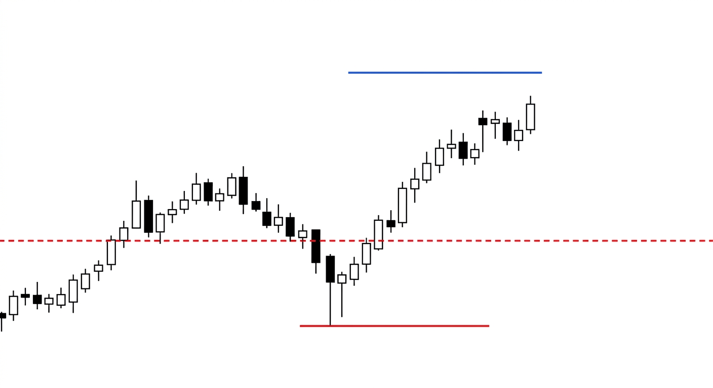
▲ लाल टूटी लकीर = सपोर्ट · नीचे लाल मोटी लकीर = स्टॉप लॉस · ऊपर नीली लकीर = लक्ष्य
तीनों जगहें — पहले से तय कीजिए:
| क्या | कहाँ | क्यों |
|---|
| घुसना 🟢 | झाड़ू वाली कैंडल के बंद होने के बाद | पक्का हो जाए तब |
| स्टॉप 🔴 | बाती के भी नीचे, थोड़ा हटकर | भीड़ से अलग जगह |
| लक्ष्य 🔵 | अगली बड़ी ऊँचाई पर | वहाँ ऊपर वाला पैसा है |
✅ सुनहरा नियम
जितना जोखिम, उससे कम से कम तीन गुना कमाई।
यानी अगर स्टॉप 100 रुपए दूर है, तो लक्ष्य कम से कम 300 रुपए दूर होना चाहिए।
अगर ऐसा नहीं है — तो वो सौदा मत कीजिए। चाहे कितना भी सुंदर लगे।
१४
पैसे का हिसाब
⭐ SMC से भी ज़्यादा ज़रूरी पाठ
🔑 सच बताऊँ? आप SMC से नहीं जीतेंगे।
आप इस पाठ से जीतेंगे।
दुनिया के सारे तरीके बेकार हैं अगर हिसाब गलत है।
सुनहरा नियम — एक सौदे में 1-2% से ज़्यादा जोखिम नहीं।
मान लीजिए आपके पास 1 लाख है। तो एक सौदे में ज़्यादा से ज़्यादा ₹1,000-2,000 का नुकसान। बस।
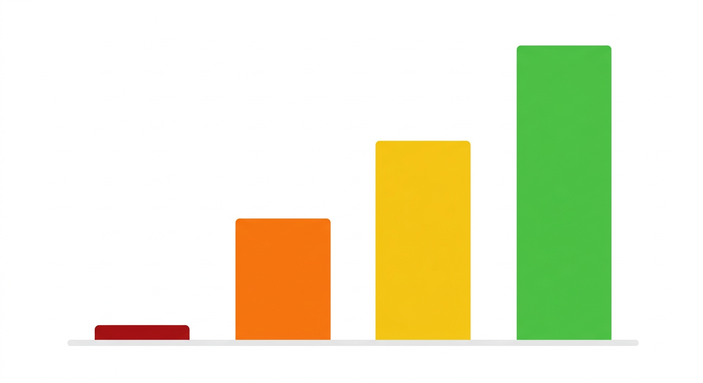
▲ जितना कम जोखिम, उतनी लंबी उम्र — दाईं तरफ़ का हरा खंभा सबसे लंबा है
अब गणित देखिए — कितनी बार हारने पर खाता ख़त्म:
| एक बार में लगाया | कितनी हार में सफ़ाया |
|---|
| 50% | सिर्फ़ 2 बार ☠️ |
| 25% | 4 बार |
| 10% | 10 बार |
| 2% | 50 बार ✅ |
⚠️ ये ज़रूर समझिए —
लगातार 8-10 बार हारना बिल्कुल आम बात है।
दुनिया के सबसे अच्छे ट्रेडर के साथ भी होता है।
तो सवाल ये नहीं कि आप हारेंगे या नहीं।
सवाल ये है — हारने के बाद आप ज़िंदा बचेंगे या नहीं।
अब एक और चौंकाने वाली बात — आप 60% बार गलत होकर भी कमा सकते हैं:
| जीत | हार |
|---|
| कितनी बार | 4 | 6 |
| हर बार | +₹3,000 | −₹1,000 |
| कुल | +12,000 | −6,000 |
कुल मुनाफ़ा = ₹6,000
और वो भी 60% बार गलत होकर!
🔑 असली राज़:
✅ जीत को चलने दो — मुनाफ़ा जल्दी मत काटो
✅ हार को जल्दी काटो — “थोड़ा और रुक जाता हूँ” सबसे महँगा वाक्य है
88% वाले ठीक उल्टा करते हैं — ₹500 का मुनाफ़ा तुरंत ले लेते हैं (डर से),
और ₹5,000 का नुकसान पकड़े बैठे रहते हैं (उम्मीद से)।
१५
नीचे जाने वाला सौदा
सब कुछ उल्टा — और कुछ नहीं
अब तक हमने ऊपर जाने वाले सौदे देखे। नीचे वाले में सब कुछ बस उल्टा हो जाता है।
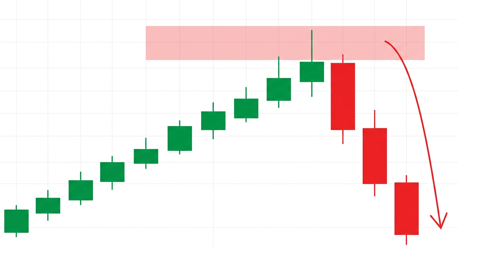
▲ लाल डिब्बा = ऊपर का ऑर्डर ब्लॉक · भाव वहाँ पहुँचा, बाती मारी, और धड़ाम नीचे
| ऊपर वाला सौदा 🟢 | नीचे वाला सौदा 🔴 |
|---|
| चाल | ऊपर की | नीचे की |
| झाड़ू कहाँ | गहराई के नीचे | ऊँचाई के ऊपर |
| बाती किधर | नीचे लंबी | ऊपर लंबी |
| इलाक़ा | सस्ता (नीचे) | महँगा (ऊपर) |
| ब्लॉक | आख़िरी लाल कैंडल | आख़िरी हरी कैंडल |
| स्टॉप | बाती के नीचे | बाती के ऊपर |
🪞 आईने की तरह सोचिए — जो ऊपर के लिए सीखा, उसे उल्टा कर दीजिए। बस।
⚠️ पर भारत में एक ज़रूरी बात
शेयर में नीचे का सौदा (शॉर्ट) सिर्फ़ उसी दिन के लिए हो सकता है — रात भर नहीं रख सकते।
लंबे समय के लिए नीचे का सौदा करना हो तो फ्यूचर या ऑप्शन चाहिए —
और वो नए लोगों के लिए बहुत ख़तरनाक है।
शुरुआत में सिर्फ़ ऊपर वाले सौदे कीजिए।
१६
कड़वा सच और आपका रास्ता
ये कोई कोर्स बेचने वाला नहीं बताएगा
❌ 1. सारी तस्वीरें “बनाई हुई” हैं
इसलिए एकदम सुंदर लग रही हैं। असली चार्ट इतना साफ़ नहीं होता।
❌ 2. झाड़ू के बाद भाव वापस आए ही — ये ज़रूरी नहीं
कई बार वो सच में गिरावट होती है, और भाव और नीचे चला जाता है।
❌ 3. लाइव में पता नहीं चलता
पुराने चार्ट पर सब आसान है। दाईं तरफ़ कुछ नहीं दिखता, और हाथ काँपते हैं।
❌ 4. ये चीज़ें हर जगह दिख जाएँगी
और यही सबसे बड़ा जाल है। हर जगह ऑर्डर ब्लॉक ढूँढेंगे →
रोज़ 10 ट्रेड → कमीशन में मर जाएँगे।
❌ 5. ये पुरानी बातें हैं, नए नाम में
ऑर्डर ब्लॉक = सपोर्ट · झाड़ू = फ़ॉल्स ब्रेकआउट · BOS = ट्रेंड जारी · FVG = गैप
60 साल पुरानी बातें, चमकदार अंग्रेज़ी नामों में — ताकि कोर्स बिक सके 💸
🤔 और सबसे बड़ी सोचने वाली बात
SMC पिछले 5 साल से भारत में सबसे ज़्यादा पढ़ाया जाने वाला तरीका है।
लाखों लोग सीख चुके हैं।
फिर भी सेबी कहता है — FY26 में 88% लोग डूबे, कुल नुकसान ₹91,685 करोड़।
और मज़े की बात — SMC कहता है “बड़े लोग भीड़ के स्टॉप काटते हैं”।
अब SMC वाले ही भीड़ हैं। तो अब किसके स्टॉप कटेंगे? 😄
जो तरीका सबको पता चल जाए — वो तरीका नहीं रहता, शिकार बन जाता है।
अगर पूरे कोर्स से
सिर्फ़ एक बात याद रखनी हो —
अपना स्टॉप वहाँ मत लगाइए
जहाँ सबका लगा है।
बाती के भी नीचे लगाइए।
🗓️ आपका 90 दिन का रास्ता
महीना 1 — सिर्फ़ देखिए 👀
एक भी रुपया मत लगाइए। रोज़ NIFTY का Daily चार्ट खोलिए और सिर्फ़
झाड़ू ढूँढिए। कागज़ पर लिखिए। बस।
महीना 2 — कागज़ पर ट्रेड 📝
अपना नियम लिखिए। रोज़ लिखिए — “आज मैं यहाँ घुसता, यहाँ स्टॉप, यहाँ निकलता।”
बिना पैसे के। फिर देखिए क्या होता।
महीना 3 — सबसे छोटी रकम 💰
अब असली पैसा — पर बहुत थोड़ा। लक्ष्य कमाई नहीं है।
लक्ष्य ये है — “मैंने अपना नियम एक बार भी नहीं तोड़ा।”
🎯 अगर तीन महीने आप नियम नहीं तोड़ पाए —
तो आप पहले ही 88% वालों से बाहर निकल चुके हैं।
🙏 आख़िरी बात, दिल से
तरीका 20% है। बाकी 80% आप हैं।
एक आदमी जो सिर्फ़ साधारण सपोर्ट-रेजिस्टेंस जानता है,
पर 1% जोखिम लेता है और डायरी लिखता है —
वो उस आदमी से कहीं ज़्यादा कमाएगा जो पूरा SMC रट चुका है
पर आधा खाता एक सौदे में लगा देता है।
जानना और करना — दो अलग चीज़ें हैं।
फ़र्क जानकारी का नहीं, अनुशासन का है।